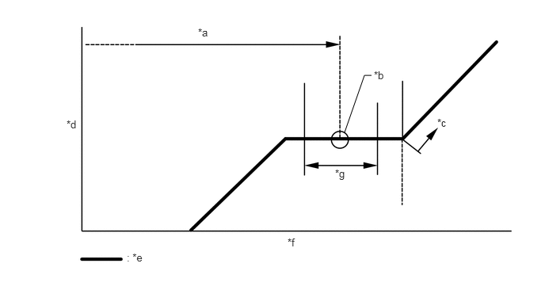

| Last Modified: 10-07-2025 | 6.11:8.1.0 | Doc ID: RM100000002GH8N |
| Model Year Start: 2024 | Model: Tacoma | Prod Date Range: [12/2023 - 03/2024] |
| Title: HEATING / AIR CONDITIONING: REFRIGERANT (for HFO-1234yf(R1234yf)): REPLACEMENT; 2024 MY Tacoma Tacoma HV [12/2023 - 03/2024] | ||
REPLACEMENT
PROCEDURE
PROCEDURE
1. RECOVER REFRIGERANT FROM REFRIGERATION SYSTEM
(a) Turn the ignition switch to ON.
(b) Operate the cooler compressor under the conditions shown below:
|
Item |
Condition |
|---|---|
|
Engine |
Idling |
|
Operating Time |
3 minutes or more |
|
A/C Switch Status |
ON |
|
Blower Switch Status |
HI |
|
Set Temperature |
MAX COOL |
This causes most of the compressor oil from the various components of the A/C system to collect in the compressor.
HINT:
It is not necessary to operate the compressor if the A/C does not operate because of compressor lock, etc.
(c) Stop the engine.
(d) Recover the refrigerant from the A/C system using a refrigerant recovery unit.
HINT:
Use the refrigerant recovery unit in accordance with the manufacturer's instruction manual.
2. CHARGE AIR CONDITIONING SYSTEM WITH REFRIGERANT
HINT:
Charge refrigerant in accordance with the equipment manual.
(a) Perform vacuum purging using a vacuum pump or appropriate equipment.
NOTICE:
Be sure to use a refrigerant recovery unit that is compatible with HFO-1234yf (R1234yf) systems.
(b) Charge the air conditioning system with refrigerant.
Refrigerant Type:
HFO-1234yf (R1234yf)
|
*a |
Standard Charge Amount |
*b |
Mean Value in Proper Range |
|
*c |
Overcharged |
*d |
High Pressure |
|
*e |
Sub-cool System |
*f |
Refrigerant Amount |
|
*g |
+/-30 g (+/-1.05 oz) |
- |
- |
Standard charge amount:
490 to 550 g (17.3 to 19.4 oz)
NOTICE:
- Do not turn the A/C switch on before charging the air conditioning system with refrigerant. Doing so may cause the compressor to work without refrigerant, resulting in overheating of the compressor.
- The refrigerant amount should be checked by quantity (weight).
- The graph above is shown for reference only.
HINT:
Ensure that sufficient refrigerant is available to recharge the system when using a refrigerant recovery unit. Refrigerant recovery units are not always able to recover 100% of the refrigerant from an air conditioning system.
3. WARM UP ENGINE
(a) Keep the A/C switch on for at least 1 minute to warm up the compressor.
NOTICE:
To prevent damage to the compressor, be sure to warm up the compressor when turning the air conditioning on after removing and installing any air conditioning system lines (including the compressor).
HINT:
Perform warm up for the compressor with the engine speed at 1500 rpm or less.
4. INSPECT FOR REFRIGERANT LEAK
(a) After recharging the air conditioning system with refrigerant, inspect for refrigerant leaks using a gas leak detector.
HINT:
Be sure to use a gas leak detector that is compatible with HFO-1234yf (R1234yf) systems.
(b) Carry out the test under the following conditions:
- Turn the ignition switch off.
- Ensure good ventilation (the gas leak detector may react to volatile gases which are not refrigerant, such as gasoline vapor and exhaust gas).
- Repeat the inspection 2 or 3 times.
- Measure the pressure to make sure that there is
some refrigerant remaining in the air conditioning
system.
Pressure when the compressor is off: approximately 392 to 588 kPa (3.9 to 5.9 kgf/cm2, 57 to 85 psi)
|
(c) Using a gas leak detector, inspect for refrigerant leaks from the air conditioning system. |
|
|
(d) Bring the gas leak detector close to the drain cooler hose with the detector power off, and then turn the detector on. HINT:
|
|
(e) If a refrigerant leak is not detected from the drain cooler hose, remove the blower motor control from the cooling unit. Insert the gas leak detector sensor into the unit and check for leaks.
(f) Disconnect the pressure sensor connector and leave it for approximately 20 minutes. Bring the gas leak detector close to the pressure sensor and check for leaks.
HINT:
When checking for leaks, the presence of oily dirt at a joint can indicate a leak.